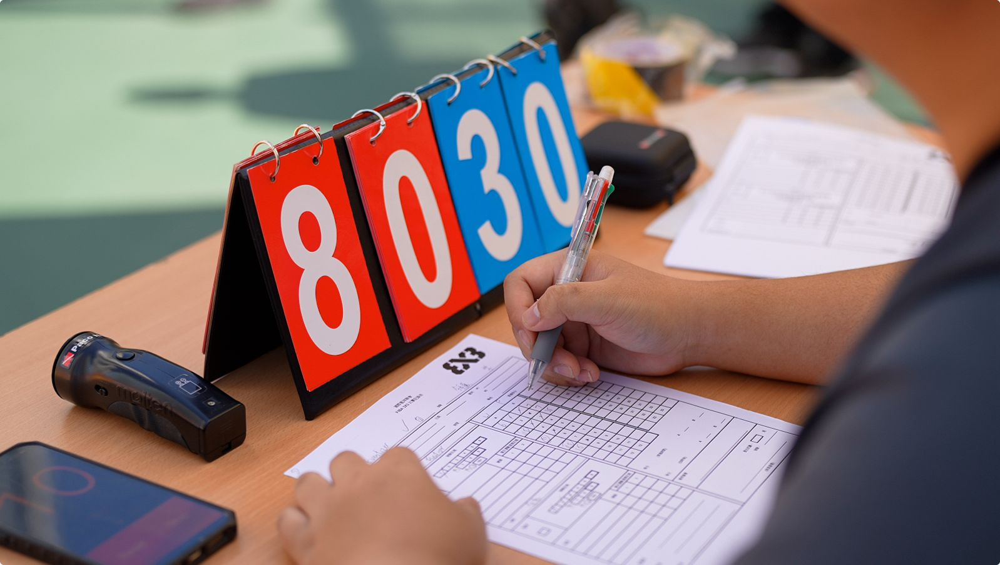

📸 記錄台裁判員在比賽中專注工作
每場籃球比賽，觀眾的目光往往集中在場上球員的精彩表現和球證的判罰上。然而，在記錄台前默默工作的計時計分記錄員，卻是確保整場比賽順利進行的幕後功臣。他們的工作看似簡單，實際上需要極高的專注力和反應速度。今天就讓我們深入了解這個經常被忽略、但至關重要的角色。
很多人不知道，計時計分記錄員在 FIBA 規則中的正式名稱是「記錄台裁判員」（Table Officials）。沒錯，他們的身份也是球證的一部分。根據國際籃球聯會（FIBA）的規定，記錄台人員與場上裁判同屬比賽執法團隊，共同承擔確保比賽公平公正進行的責任。
記錄台裁判員通常包括以下崗位：
他們雖然不在場上跑動，但他們的每一個操作都直接影響比賽的進程和結果。一個計時上的失誤，可能改變整場比賽的走向。
💡 你知道嗎？在 FIBA 正式比賽中，記錄台裁判員需要持有相應的資格認證，與場上球證一樣需要經過培訓和考核。
記錄台是整場比賽的「資訊中心」。計時計分記錄員需要同時與多方溝通協調：
💡 LaLaRef 經驗分享：一位優秀的記錄員就像交通指揮中心，所有比賽資訊都經過記錄台匯集和分發。溝通能力和協調能力是這個崗位最重要的素質。
計時計分記錄員的工作直接影響比賽能否順利進行。以下是他們在比賽不同階段的關鍵職責：
「耳聽八方、眼明手快」是對計時計分記錄員最貼切的形容。這個崗位對個人能力有著極高的要求：
記錄員需要同時留意多個聲音來源：
記錄員的眼睛和雙手需要高度協調：
💡 實戰小知識：在一場激烈的比賽中，記錄員平均每分鐘需要處理 3-5 個不同的事件。在比賽最後兩分鐘，這個頻率可能翻倍。保持冷靜和專注是記錄員最重要的心理素質。
計時計分記錄員在實際工作中經常面對各種挑戰：
比賽越激烈，記錄工作越容易出錯。特別是在比分接近的關鍵時刻，每一個數據都可能成為爭議焦點。應對方法是建立標準化的記錄流程，養成「記錄-核對-確認」的習慣。
當犯規、換人、暫停同時發生時，記錄員需要有條不紊地逐一處理。建議按照優先順序處理：先停錶、再記錄犯規、最後處理換人。
教練或球員有時會對記錄數據提出質疑。記錄員需要保持冷靜和專業，以事實和記錄為依據回應，必要時請場上球證協助處理。
計時器或計分牌偶爾會出現故障。記錄員應該熟悉備用方案，例如使用手動計時或備用計分牌，確保比賽不會因設備問題而中斷。
想要成為一名出色的計時計分記錄員，可以從以下幾方面提升自己：
💡 LaLaRef 建議：如果你對籃球裁判工作有興趣，記錄台是一個很好的起步點。它能讓你在不需要場上跑動的情況下，深入了解比賽規則和裁判運作，為日後成為場上球證打下堅實基礎。
LaLaRef 急單王不僅提供場上球證服務，同時提供專業的計時計分記錄台及賽事錄影服務。我們的記錄台團隊：
我們的賽事錄影服務能為你的比賽留下珍貴紀錄，方便賽後回顧、球員分析及社交媒體分享。無論你是組織學界比賽、企業友誼賽還是私人聯賽，LaLaRef 都能為你安排最專業的裁判團隊，包括場上球證、記錄台人員及錄影服務，確保你的比賽順利舉行。